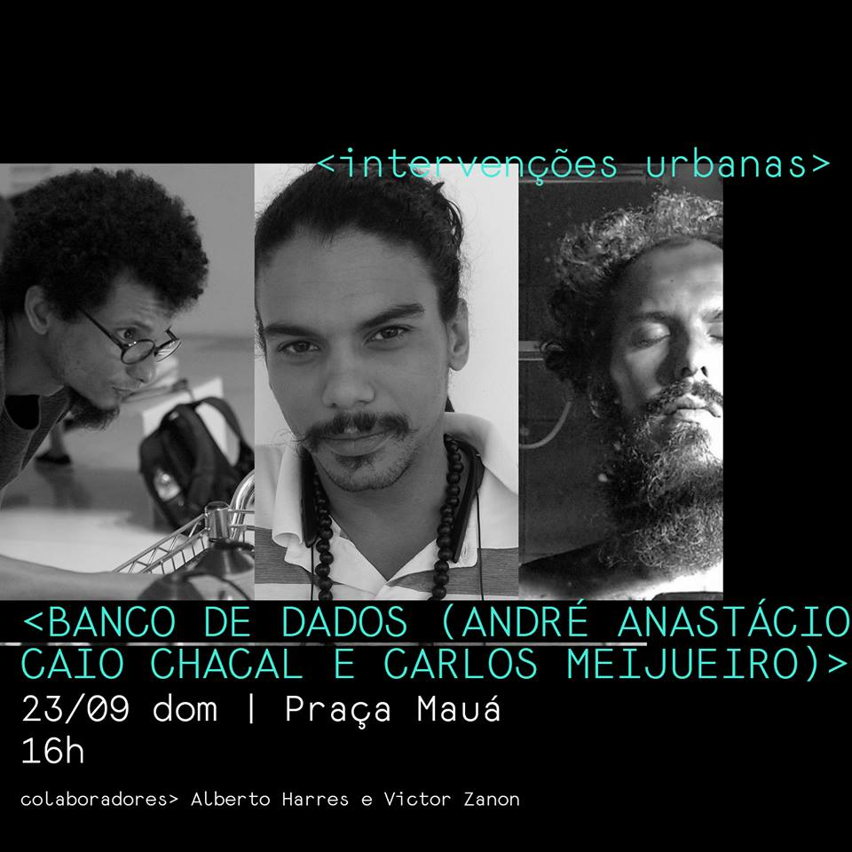

Banco de Dados: contos da rua
Autores:André Anastácio, Caio Chacal, Carlos Meijueiro e Vitor Zanon Formatos: Paisagem Sonora de 8 canais com esculturas de concreto. Duração: 45” Ano: 2018
Buscando materializar o invisível por meio de uma escuta que exercita a cidadania, “Banco de dados” torna audíveis leituras da cidade por meio da voz e da vivência de pessoas em situação de rua no Rio de Janeiro. Esta incursão nas ruas para exercitar uma escuta afetiva, proporcionou uma coleta de histórias de vida, um retrato social que possui camadas sensíveis que complementam dados quantitativos como a “taxa de desalentados”, índice que passou a integrar em 2018 as estatísticas do IBGE. A obra investiga a dinâmica da geografia humana nos centros urbanos, segundo a perspectiva de quem precisou habitar a rua. Amplificar e valorizar essas vozes em uma paisagem sonora, se apresenta como tentativa de provocar uma reflexão sobre o desalento nos centros urbanos.
projeto realizado no contexto do Festival Multiverso, comissionado pelo Oi Futuro.
